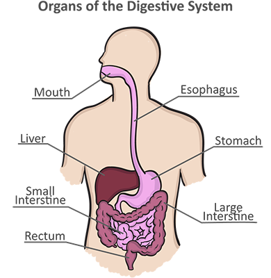
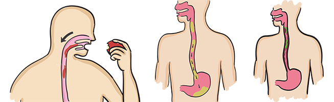

Module: Dysphagia and the Digestive Tract
Janet L. Poole, PhD, OTR/L, and Cindy Mendelson, PhD, RN, and Dinesh Khanna, MD, MS
The digestive tract, or gastrointestinal (GI) system, consists of the esophagus (food pipe), stomach, small intestine (bowel), large intestine (colon), and rectum (see picture of the digestive system). In this module, we will review the common problems of the digestive tract, such as dysphagia (difficult or painful swallowing), reflux (acid flowing back up the esophagus from the stomach), and problems of the stomach, intestines, and rectum. We will also discuss ways to manage symptoms related to the digestive tract.
The following link to Digestive System (Gut, Gastrointestinal) Involvement in Scleroderma provides information on the medications, lifestyle changes, and treatment of digestive system problems in persons with scleroderma.
http://www.scleroderma.org/site/DocServer/digestive_system_article.pdf?docID=314
The following link to Eating Well With Scleroderma provides information on nutrition for persons with scleroderma.
http://www.med.umich.edu/scleroderma/patients/nutrition.htm
What is dysphagia?
Dysphagia means difficulty swallowing, and it is very common in people who have scleroderma. Saliva is important in swallowing. Saliva contains enzymes that help break down food. In scleroderma, some people have a dry mouth, which can make swallowing difficult. Dysphagia also occurs in people with scleroderma because weak muscles move food from the esophagus to the stomach very slowly. This is called dysmotility. The esophagus can also become narrower (smaller) over time because scar tissue builds up from reflux.
How do I know if I have dysphagia?
Your doctor will decide if you have dysphagia by asking you questions about your health and performing diagnostic tests (discussed later in this module). Symptoms that may indicate that you have dysphagia include:
- Needing to swallow often.
- Chest or stomach pain or burning (indigestion/reflux/heartburn).
- Frequent coughing and clearing your throat.
- Extra or decreased saliva when trying to eat.
- Needing to eat more slowly.
- Losing weight.
- Feeling tired and losing weight.
- Getting food stuck in your throat or feeling a heavy “stuck” feeling in your chest.
- Trying to avoid eating and drinking fluids.